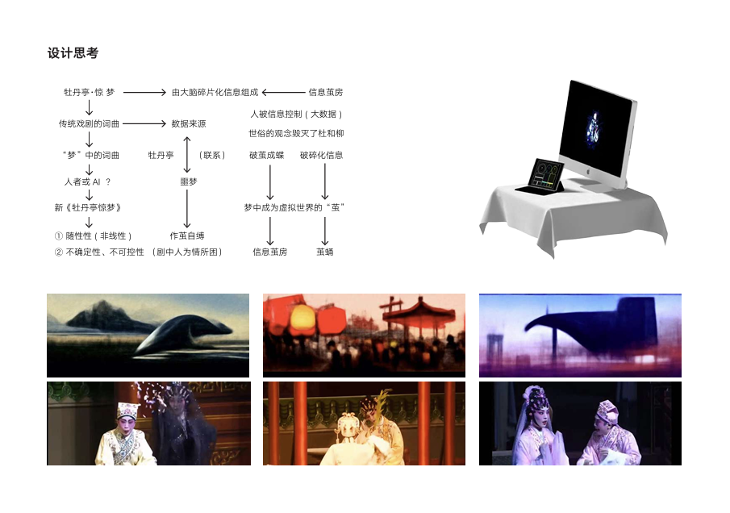
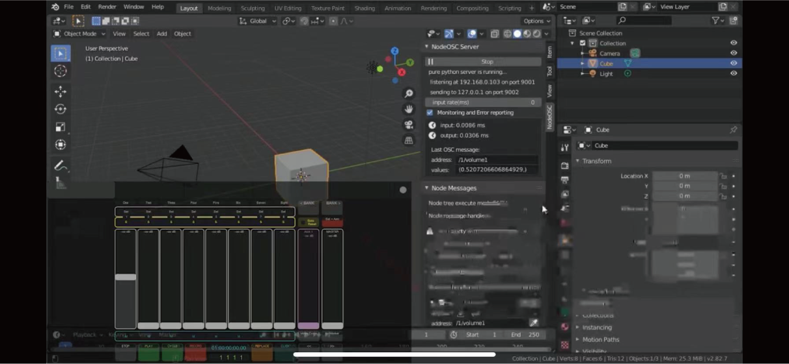
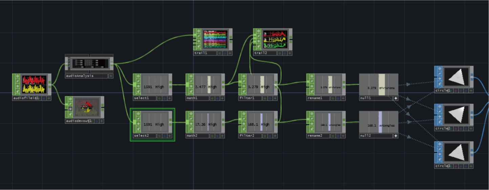
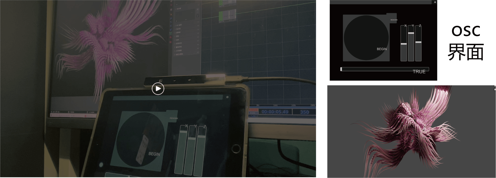
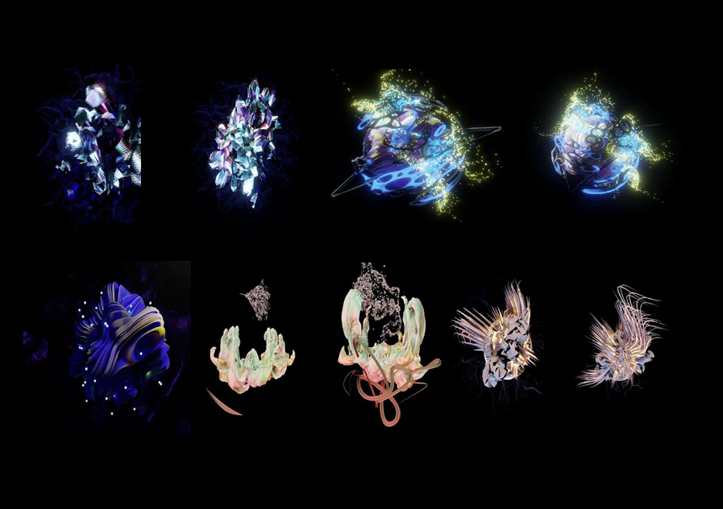

超现实数字梦境
设计思考 Design Concept
“在计算机的世界中，粤剧会是怎样的新形态？”
作品以《牡丹亭·惊梦》为蓝本，引用戏中二人身处梦境时的音频和唱词。我们将音频通过 TouchDesigner 加入蚕丝的声音模拟合成为背景音乐，将唱词打乱重组，成为构建“茧”生长的数据源。
这隐喻了信息时代的“信息茧房”——人们被大数据和碎片化信息所包裹，如同剧中人为情所困，作茧自缚。

从传统戏曲到“信息茧房”的逻辑推演
负责内容 My Role
- Blender 交互模型制作
- TouchDesigner 音乐数据转换编程
- Blender 与 TD 的 OSC 端口连接
- 项目概念产出与逻辑推演
技术栈 Tech Stack
TouchDesigner / Blender (Eevee) / OSC / Audio Reactive
技术实现 Technical Implementation
通过 OSC 协议实现音频数据对 3D 模型的实时驱动：

01. 音频数据采集
将粤剧音频放入 TouchDesigner，选取所需元素并提取频谱数据，作为驱动源。

02. 基础模型 + TD 控制
通过 Node OSC 将 TD 获取的数据传递到 Blender，实现数据对模型形态的实时控制与 Eevee 渲染。

03. 摄像头交互
提取摄像头捕捉到的环境色值与参与者动态，实时改变“茧”的颜色与形态，实现虚实共生。
视觉呈现 Visuals

生成的数字化“茧”形态